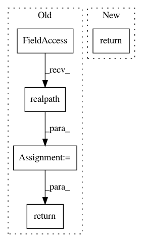

55290e2b5b7b4ed3e678282a49a11da6f3b2de78,src/python/pants/binaries/binary_util.py,BinaryUtil,select_binary,#BinaryUtil#Any#Any#Any#,176
Before Change
// TODO(John Sirois): finish doc of the path structure expected under base_path
binary_path = self._select_binary_base_path(supportdir, version, name)
bootstrap_dir = os.path.realpath(os.path.expanduser(self._pants_bootstrapdir))
bootstrapped_binary_path = os.path.join(bootstrap_dir, binary_path)
if not os.path.exists(bootstrapped_binary_path):
downloadpath = bootstrapped_binary_path + "~"
try:
with self._select_binary_stream(supportdir, version, name) as stream:
with safe_open(downloadpath, "wb") as bootstrapped_binary:
bootstrapped_binary.write(stream())
os.rename(downloadpath, bootstrapped_binary_path)
chmod_plus_x(bootstrapped_binary_path)
finally:
safe_delete(downloadpath)
logger.debug("Selected {binary} binary bootstrapped to: {path}"
.format(binary=name, path=bootstrapped_binary_path))
return bootstrapped_binary_path
@contextmanager
def safe_args(args,
After Change
// TODO(John Sirois): finish doc of the path structure expected under base_path.
binary_path = self._select_binary_base_path(supportdir, version, name)
return self._fetch_binary(name=name, binary_path=binary_path)
def select_script(self, supportdir, version, name):
Selects a platform-independent script.
In pattern: SUPERPATTERN
Frequency: 3
Non-data size: 5
Instances
Project Name: pantsbuild/pants
Commit Name: 55290e2b5b7b4ed3e678282a49a11da6f3b2de78
Time: 2015-10-21
Author: benjyw@gmail.com
File Name: src/python/pants/binaries/binary_util.py
Class Name: BinaryUtil
Method Name: select_binary
Project Name: pyinstaller/pyinstaller
Commit Name: f75edb9ac0da15ce0bdec52ff3aaef74aab5a470
Time: 2016-01-10
Author: peter.inglesby@gmail.com
File Name: PyInstaller/lib/modulegraph/modulegraph.py
Class Name: ModuleGraph
Method Name: _find_module
Project Name: pyinstaller/pyinstaller
Commit Name: 536050ac3217f56b52a3877bb771d86246148ffd
Time: 2016-01-21
Author: peter.inglesby@gmail.com
File Name: PyInstaller/lib/modulegraph/modulegraph.py
Class Name: ModuleGraph
Method Name: _find_module